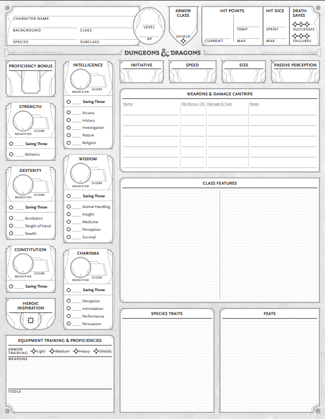
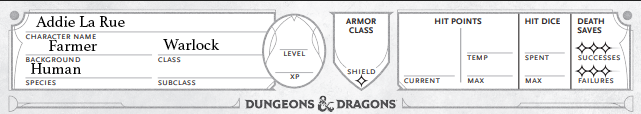
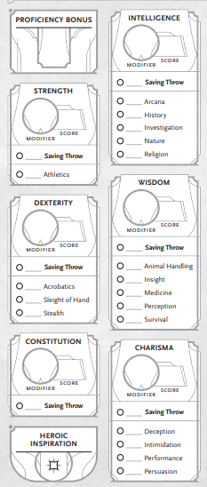

Oftentimes the hardest part about creating a character is deciding who you want to play, especially since you might be playing this character for years. The easiest way I’ve found to come up with new characters is to base them on characters from a book, movie or TV show. For example, one of the characters I created recently to play in the Adventurer’s League was based on the main character from a book The Invisible Life of Addie LaRue. In the book (not a spoiler), Addie skips out on her wedding, runs to the river and begins to pray for salvation. What she does not notice is that the sun has set, and darkness is creeping in upon the world. A god answers her prayers and she strikes a bargain with him. She will live forever, but no one will ever remember who she is.
This character is not your typical D&D character and if I played her exactly as written, she certainly wouldn't be much fun. Instead, I took the idea of her and played with it until I created an Addie that might have existed if her world had been Faerûn instead of Earth. Starting with an already written character in mind helps you to build with specific goals in mind and it is easier to roleplay when there is an existing personality to play from. Building characters set in fantasy realms, like Aragorn from Lord of the Rings or Katara from Avatar: The Last Airbender is even easier, though your version will never be exactly like the original character. In time weird character ideas that might be fun to play will come to you on their own. An in-game comment led to the creation of my Beast Master Ranger who formerly worked for a circus and whose beast companion is always a pygmy-sized elephant. Another comment led friends to create lizardfolk with the Chef feat. They harvest flesh after every battle if there is time and then make meals from various creatures (which give temporary HP if your character is willing to eat it). They also have the D&D version of a refrigerator and keep a menu with enticing dish names.
Once you have a character idea, the D&D Player's Handbook (PHB) would have you choose your class first, but if you know what character you want to play, it doesn’t hurt to choose your species first. Previously, selecting a species (known in all previous editions as a race) came with benefits to specific stats, but now those stat benefits are specific to your background. Each species still has different benefits that make them unique and knowing those up front may change which skills you choose. For my example character, Addie LaRue, I chose human because that’s what she is in the book and I was trying to stick visually to the source material. When creating characters from fantasy realms, like the Marvel Universe, I often choose other species. The group I play with regularly at conventions created characters based on the Guardians of the Galaxy. The character I created for that group is based on Gamora and I chose to make her a Drow because of her green skin color. Since Addie doesn’t have anything special besides eternal life, being human makes sense for the character. Many of the other species get special abilities such as darkvision, special attacks, special defenses, spells or other fancy features. Humans get an extra origin feat, an extra skill and Heroic Inspiration after every long rest to help them on their journey.

When you look at the PHB, it may seem like there are fewer classes to pick from than species, especially when you include all the allowable species from other sourcebooks. But! An Eldritch Knight fighter is very different from a Champion fighter, even though they are the same class. If you think of each subclass as its own unique class because of how dramatically they change the original class, then there are almost 100 more classes than species to choose from. With 13 classes (12 in the PHB and 1 from Tasha’s Cauldron of Everything), and up to 10 subclasses for each class to pick from, and then the option of multiclassing, the options are endless. The base classes are:
Choosing your class is similar to choosing a profession. In general, you want to decide whether you want to wield magic, fight with weapons or do both. Addie’s source material doesn’t have any overt magic, nor does she ever get into a physical altercation, but she does make a pact with a very powerful being. There is one class on this list whose description is exactly that, Warlock. A warlock makes a pact with a powerful patron who grants them access to magic, so I chose that for her class. For Gamora, who is a warrior assasin, I chose the Rogue class and the assassin subclass when she had leveled enough. If you want to use magic and fight, most classes have a subclass that allows your character to mix and match. The Eldritch Knight is a subclass of fighter that allows your character to wield magic and swords. The Arcane Trickster subclass of rogue allows your character to use small magics while still being a sneaky thief. The Hexblade Warlock allows your normally squishy mage to become a tough melee fighter.
The background of your character is who they were before they decided to go adventuring. Addie was born in rural France in the 1700s and so the closest background option for her was farmer. While that background didn’t provide the stat bonuses in the abilities that a Warlock uses so I had to be careful when choosing the number array for her stats, but I wasn’t concerned about min/maxing the character. I built her for the roleplaying aspect. Farmer also provided her proficiency in the Animal Handling and Nature skills. Each background bestows an origin feat, and for Addie it was the Tough feat which increases her Hit Points (HP) each level, which is really good for a normally squishy Warlock. There are many background options across the various source books but not as many as there are in reality, so you do have the option of creating a custom background if nothing seems to fit. Look at the Parts of a Background on page 177 of the PHB 2024, and choose options that fit the character you’re creating. Just remember that you can only choose a feat that is tagged as an Origin Feat.
This is also a great time to think about the character’s backstory. If the character that you’re creating is from a movie, book or TV show, they may already have an established backstory that you can use. If not, you’ll want to build one that provides your character a motivation or two. Every background in the original 2014 fifth edition D&D provided options for traits, ideals, bonds and flaws. Even though it isn’t in the new edition, you can still use those options to help you build out the personality and motivations of a character that you’re building without a source material.

Now that your character has a species, a class and a background, the next piece is determining the character's stats. Unless your Dungeon Master wants to use alternate rules, I recommend using the Standard Array By Class on page 38 of the PHB. After you’ve created a few characters and see how the various ability scores function in the game, then you might choose the Point Buy method. The class you chose will guide you where to put the highest scores if you don’t use the Standard Array By Class.
When you picked a background, your character received proficiency in 2 skills, and when you picked the class, your character was given a list of skills to pick from and number of skills they could choose from that list. This is another place where I often choose based on the background and personality of the character I’m planning to play rather than strictly what might be more useful in the game. For Addie, her background gave her proficiency with Animal Handling and Nature, which in general are not the skills that a Warlock would pick, but it is what fit the character so I didn’t customize them. The Warlock class allowed me to choose 2 proficiencies from: Arcana, Deception, History, Intimidation, Investigation, Nature, or Religion. She already had Nature, so I chose History because she has technically been around for 300+ years and Deception because the character did become skilled in lying about who she was.
Once the ability scores have been set, and the skills chosen, then you get to fill in all the numbers. The hardest part is remembering the difference between ability score and ability modifier. The score is the number that is generally between 8 and 16 to start with. The modifier is based on the table on page 38 in the PHB. Essentially, if your score is 10, your modifier is 0. For every two numbers up the modifier increases by 1. And for numbers below, the modifier decreases by 1. Your level determines your proficiency bonus and at level 1 it is +2. Your saving throws (specified by class) and skills are determined by the ability modifier. If the character is not proficient in the skill or saving throw, record only the ability modifier. On the other hand, if the character has proficiency in the saving throw or skill, add the proficiency bonus to the ability modifier. For example, Addie is proficient in Deception which is a Charisma-based skill. Her Charisma modifier is +3 and her proficiency bonus is +2 which makes her Deception skill +5. On the other hand, Nature is an Intelligence-based skill. Her Intelligence modifier is 0 and her proficiency bonus is still +2, so that skill is +2. Arcana is also Intelligence-based but because she is not proficient, her Arcana skill is 0.
Your class and background provide you with Starting Equipment. If you don't like the provided equipment, you can instead choose to take the gold pieces and purchase equipment from Chapter 6 Equipment. Generally, the starting equipment is good enough and you'll earn better items in the campaign than what you can purchase from the PHB.
Your class and certain Origin Feats, determine your ability to cast spells. Use the instructions from your class for determining the amount and type of spells that your character can cast. Then choose them from the list provided in your classes subsection. If you have an Origin Feat that provides access to spells, that feat will tell you which spells your character has access to or which spell list you can choose from and how many of each level. You will then calculate your Spellcasting Ability Modifier and Spellsave DC based on which Ability your character uses to cast: Wisdom, Intelligence or Charisma. The Spellcasting Ability Modifier for Addie +3. Her Spellsave DC is 8+Proficiency+Spellcasting Ability Modifier: 8+2+3=13. The Spellcasting Attack Bonus is Spellcasting Ability Modifier plus Proficiency, 3+2=5.
As you begin the campaign, if you let the personality and motivations of the character you selected be your guiding light for how you react to events in the game, soon you’ll be roleplaying with the best of them. Let those personalities shine, even if it means that the character does something you wouldn’t, or you know might not be the optimal action, as long as it doesn't hurt a fellow party member. Addie makes very different choices and reacts very differently than Gamora. Gamora takes no issue with stealing from people if it betters her party, whereas Addie struggled in a recent module with the idea of stealing giant peacock eggs from an old lady. She followed her party because that was her only option, but did not involve herself in the theft, which it turned out weren’t peacock eggs at all but a rather nasty monster from the Feywild, and the old lady was actually a hag. If you find that the character you created routinely acts in ways that hurt the party or becomes evil, I would strongly suggest creating a different character. Don't ruin everyone else's fun because you want to play a jerk character. If you do, don't be surprised if games are suddenly scheduled when you're not available.
Your characters will evolve over time and diverge from their source material as the events within the game change them. While Addie made a deal with a possible devil, the book character never ventured into hell, whereas my D&D character has been twice now. The original character is merely there for inspiration, not to shackle you. If you want inspiration for how to create various characters for D&D, there is a great YouTube channel by Tulok the Barbarian. He has been turning fictional characters into D&D characters for years. Check it out and maybe the character you want to play has a video with suggestions already. Remember, they are just suggestions though, you can vary it as you like. This is about having fun, not being accurate to the source or perfect!